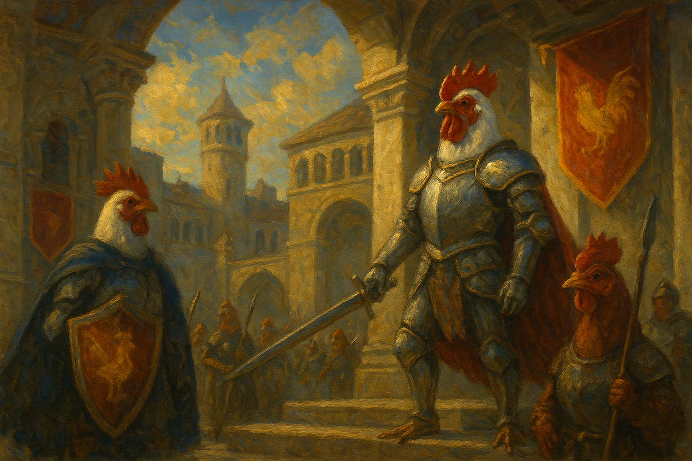

<!DOCTYPE html>
<html lang="en">

<head>
  <style>
    .top-menu {
      width: 100%;
      background: #fffbe7;
      border-bottom: 2px solid #e6d1a3;
      display: flex;
      justify-content: center;
      align-items: center;
      padding: 0;
      position: sticky;
      top: 0;
      z-index: 100;
    }
    .top-menu ul {
      list-style: none;
      margin: 0;
      padding: 0;
      display: flex;
      gap: 24px;
    }
    .top-menu li {
      display: inline;
    }
    .top-menu a {
      display: inline-block;
      padding: 12px 28px;
      font-size: 1.1em;
      color: #fff;
      background: #d97428;
      <li><a href="golden-knight.html">The Golden Knight of Chickenopolis</a></li>
    </ul>
  </nav>
  <section class="section" id="cluckington-family">
    
    <div class="family-title" style="margin-top: 32px; font-size: 2em; font-weight: bold; color: #d97428; font-family: 'Georgia', serif; margin-bottom: 12px; text-align: center;">
      The Cluckington Family
    </div>
    <div class="story" style="margin-bottom: 32px; max-width: 700px;">
      Once upon a time in the bustling streets of Chickenopolis, lived the Cluckington family—a heroic bunch of
      chickens with a knack for adventure. <br><br>
      <div id="family-members">
        Mother Henrietta Cluckington was famous for her delicious and long lasting corn muffins, while Father Roostwell
        Cluckington always woke up the city with his proud crowing at dawn and was known for stopping all of those pesky
        animals that try to eat them. Their three chicks—Peep, Cheepers, and Nugget—wanted to be as heroic as their
        father.
      </div>
      <br><br>
      One spring morning, the Cluckingtons decided to host the annual "Egg-stravaganza," a festival where chickens
      from all corners of Chickenopolis gathered to race, dance, and hunt for the legendary golden egg. Peep, the
      youngest, dreamed of finding the egg and becoming the hero of the day.<br><br>
      With teamwork, laughter, and a sprinkle of luck, the Cluckington family faced muddy puddles, tricky mazes, and
      even a surprise visit from the wise old Professor Featherbeak. In the end, Peep discovered the golden egg hidden
      beneath the oldest oak tree, bringing joy and pride to the family.<br><br>
      From that day on, the Cluckingtons became legends in Chickenopolis, proving that with family, friendship, and a
      little bit of cluck, anything is possible!
    </div>
  </section>

  <!-- Audio Play Button -->
  <div id="audio-fallback-btn-container" style="text-align:center; margin: 32px 0;">
    <button id="audio-fallback-btn" style="font-size:1.2em; padding: 12px 28px; background: #ffe4b3; color: #7a4a13; border: none; border-radius: 8px; box-shadow: 0 2px 8px rgba(0,0,0,0.07); cursor: pointer; font-family: 'Georgia', serif;">Play Theme Audio</button>
    <div style="color:#a00; font-size:0.95em; margin-top:8px;">If you don't hear music, click the button above.</div>
  </div>
  <!-- Hidden YouTube iframe for audio -->
  <div style="position: absolute; left: -9999px; width: 1px; height: 1px; overflow: hidden;">
    <div id="yt-audio"></div>
  </div>
  <script>
    let ytPlayer;
    let ytApiReady = false;
    let audioPlayed = false;
    let fallbackShown = false;
    // Load YouTube IFrame API
    var tag = document.createElement('script');
    tag.src = "https://www.youtube.com/iframe_api";
    var firstScriptTag = document.getElementsByTagName('script')[0];
    firstScriptTag.parentNode.insertBefore(tag, firstScriptTag);

    // Save playback time before navigating away
    function saveAudioTime() {
      if (ytPlayer && ytPlayer.getCurrentTime) {
        try {
          localStorage.setItem('bockbock_audio_time', ytPlayer.getCurrentTime());
        } catch (e) {}
      }
    }
    // Attach to all menu links
    document.addEventListener('DOMContentLoaded', function() {
      document.querySelectorAll('.top-menu a').forEach(function(link) {
        if (!link.classList.contains('active')) {
          link.addEventListener('click', saveAudioTime);
        }
      });
    });

    function hideFallbackButton() {
      if (!fallbackShown) {
        document.getElementById('audio-fallback-btn-container').style.display = 'none';
        fallbackShown = true;
      }
    }

    function tryPlayAudio(player) {
      // Always hide the button immediately on any play attempt
      hideFallbackButton();
      try {
        player.unMute();
        player.playVideo();
      } catch (e) {
        // Do nothing, button stays visible
      }
    }

    function createAndPlayYTPlayer() {
      if (audioPlayed || !ytApiReady) return;
      audioPlayed = true;
      hideFallbackButton(); // Hide button immediately
      ytPlayer = new YT.Player('yt-audio', {
        height: '1',
        width: '1',
        videoId: '5j1y_aZORZs',
        events: {
          'onReady': function(event) {
            event.target.mute();
            // Always seek to saved time or 0 if at end
            let t = 0;
            let duration = 0;
            try {
              t = parseFloat(localStorage.getItem('bockbock_audio_time'));
              duration = event.target.getDuration ? event.target.getDuration() : 0;
            } catch (e) {}
            if (!isNaN(t) && t > 0 && (!duration || t < duration - 2)) {
              event.target.seekTo(t, true);
            } else {
              event.target.seekTo(0, true);
            }
            // Always try to play and unmute after seeking
            setTimeout(function() {
              event.target.unMute();
              event.target.playVideo();
              // If not playing, force play again
              setTimeout(function() {
                if (event.target.getPlayerState && event.target.getPlayerState() !== 1) {
                  event.target.playVideo();
                }
              }, 600);
            }, 800);
            hideFallbackButton();
          },
          'onStateChange': function(event) {
            // Loop the video when it ends
            if (event.data === YT.PlayerState.ENDED) {
              event.target.seekTo(0, true);
              event.target.playVideo();
            }
          },
          'onError': function() {
            // Do nothing, button stays visible
          }
        }
      });
      window.removeEventListener('click', createAndPlayYTPlayer);
      window.removeEventListener('keydown', createAndPlayYTPlayer);
      window.removeEventListener('scroll', createAndPlayYTPlayer);
      // Fallback: if player not created after 3 seconds, show button
      setTimeout(function() {
        if (!ytPlayer) showFallbackButton();
      }, 3000);
    }

    window.onYouTubeIframeAPIReady = function() {
  ytApiReady = true;
  // Listen for first user interaction
  window.addEventListener('click', createAndPlayYTPlayer);
  window.addEventListener('keydown', createAndPlayYTPlayer);
  window.addEventListener('scroll', createAndPlayYTPlayer);
    };

    // Fallback button handler
    document.addEventListener('DOMContentLoaded', function() {
      var btn = document.getElementById('audio-fallback-btn');
      if (btn) {
        btn.addEventListener('click', function() {
          hideFallbackButton();
          if (ytPlayer && ytPlayer.playVideo) {
            ytPlayer.unMute();
            ytPlayer.playVideo();
            // If not playing, force play again
            setTimeout(function() {
              if (ytPlayer.getPlayerState && ytPlayer.getPlayerState() !== 1) {
                ytPlayer.playVideo();
              }
            }, 600);
          } else {
            // If player not created, create and play
            createAndPlayYTPlayer();
          }
        });
      }
      // Button is visible by default, nothing to do
    });
  </script>
</body>
</body>

</html>